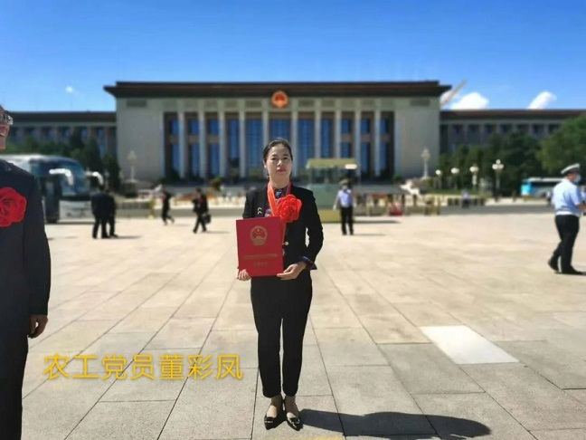
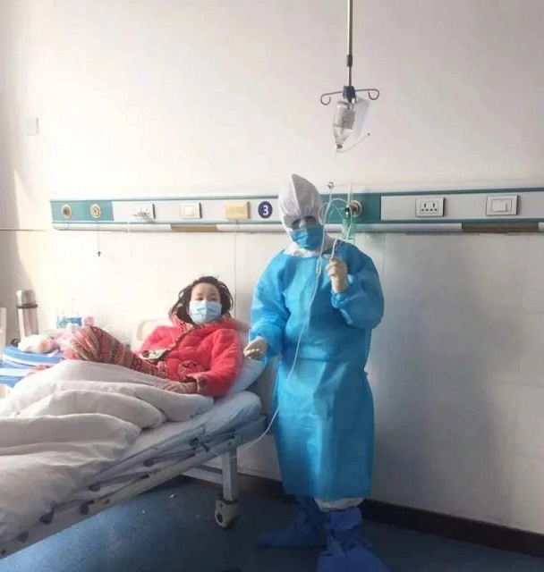

9月8日上午，全国抗击新冠肺炎疫情表彰大会在北京人民大会堂隆重举行。大会对全国抗击新冠肺炎疫情先进个人、先进集体，全国优秀共产党员、全国先进基层党组织进行表彰，赤峰学院附属医院呼吸与危重症医学科护士长、农工党党员董彩凤荣膺“全国抗击新冠肺炎疫情先进个人”称号。

农工党党员董彩凤积极响应医院党委的号召，主动请缨并在第一时间报名参加援鄂抗疫医疗队。她向院领导请示说：“作为呼吸与危重症医学科的护士长，我的专业对口，技术娴熟，让我先去吧！”作为内蒙古自治区首批援鄂医疗队成员，担任赤峰学院附属医院援鄂医疗队队长和护理组组长，支援湖北省荆门市钟祥县收治医院钟祥同仁医院。

钟祥是荆门的重灾区，医院共有三个病区，每个病区60张床，四分之一是重症患者，刚到同仁医院，防疫物资匮乏，人员不足，她克服身体弱、工作时间长等各种困难，每天工作10余个小时，每次都是汗流浃背。她还主动承担起感控工作，为后期疫情得到扭转赢得了宝贵的时间。既要克服和适应艰苦环境，还要把缓解新冠肺炎患者身心压力作为重要任务。除了救助患者，她千方百计地关心他们，给予患者无微不至的关怀和心理疏导。作为医疗队队长，她深知责任重大，因为她有责任把大家安全地带回来。援鄂期间，除了每天要了解队员们的工作状况外，还要时刻提醒大家做好个人防护。虽然队员们分布在4家定点医院执行任务，但她们所承担的职责和使命是一样的，心始终紧紧连在一起。她常因工作紧张、劳动强度大而犯胃病，使得身体几乎站立不住，但她强忍剧烈疼痛坚持把工作都做完，在援鄂一线的53天里，她共参与护理病人158人，完成静脉输液566人次，完成肌肉注射900余人次。从她入科到科室患者清零，共有155名患者治愈出院，其高超的护理能力和水平也得到了患者和同行的肯定和称赞。
“千里驰援共战役，民族大爱显真情”，这是荆门市沙洋县委送给农工党党员董彩凤和战友们的锦旗。“承蒙相助，荆生难忘”，这是农工党党员董彩凤和队员们完成任务离开荆门时，街道上夹道欢送的人群高高拉起的横幅。望着街道两旁夹道欢送的人群和高高举起的双手、深深弯腰的鞠躬和一个个庄严的敬礼，农工党党员董彩凤被这一系列的举动感动，她说：“社会各界称我们为英雄，我觉得，我们只是在这个特殊时期，穿了一身特殊的装备，在特殊的地方，干了我们再熟悉不过的工作。”
与时间赛跑、与疫情竞速，从白雪皑皑的冬天出发，到绿意盎然的初春归来，在湖北的53天的日夜奋斗，农工党党员董彩凤用实际行动彰显了医护工作者敬佑生命、救死扶伤、甘于奉献、大爱无疆的职业精神，彰显了农工民主党的崇高精神和优良传统，面对非常时期、非常任务、非常困难，她无怨无悔、任劳任怨，农工党党员董彩凤同奋战在湖北一线的兄弟姐妹们一起，为打赢湖北和武汉疫情防疫阻击战切实贡献了应有的力量，为抗疫一线提供了及时有力的支援，用无私无畏和人间大爱交了一份最美的生命答卷。